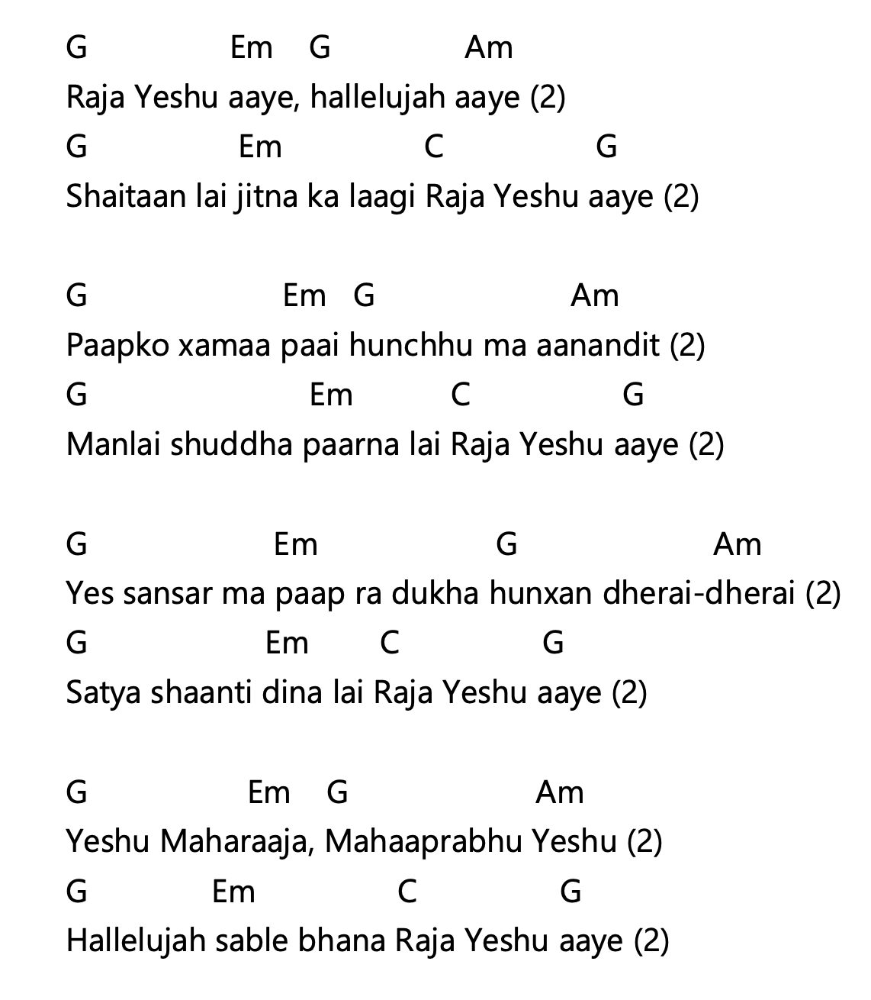
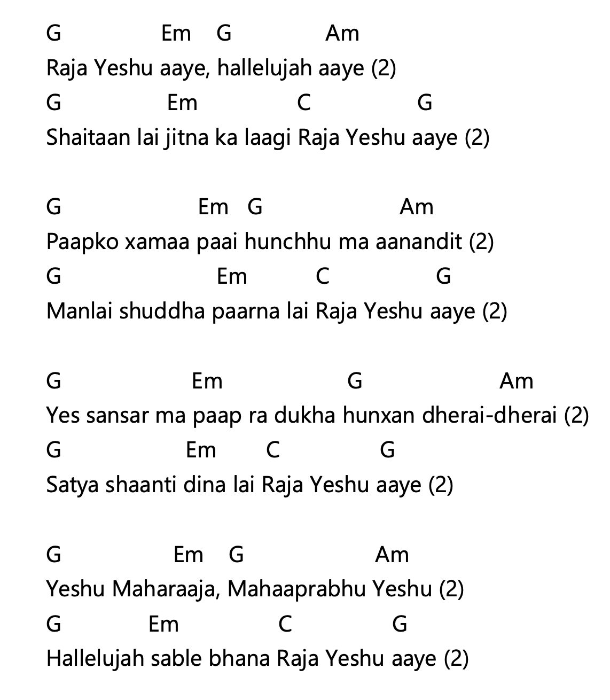
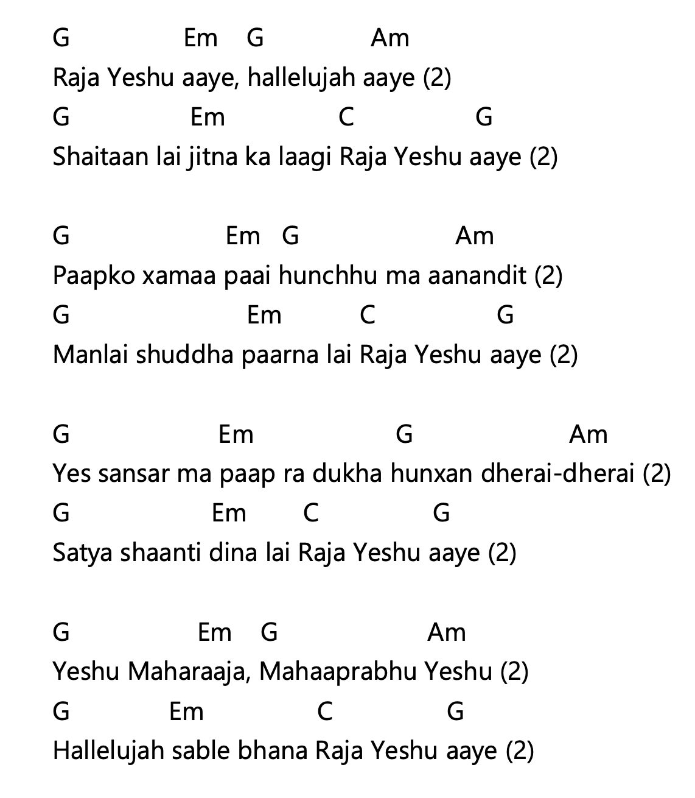
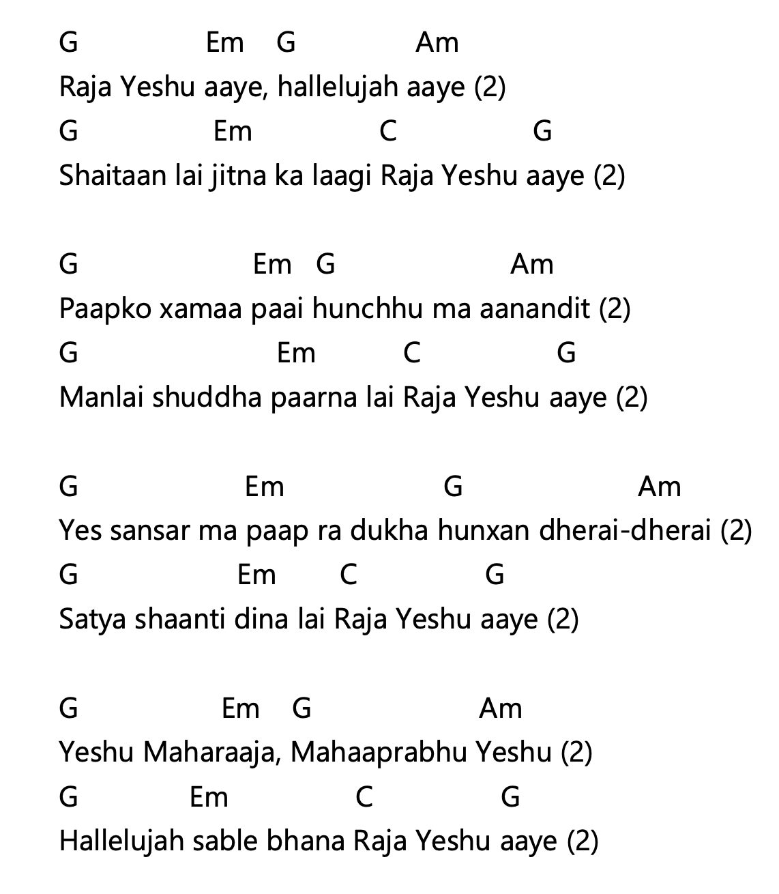
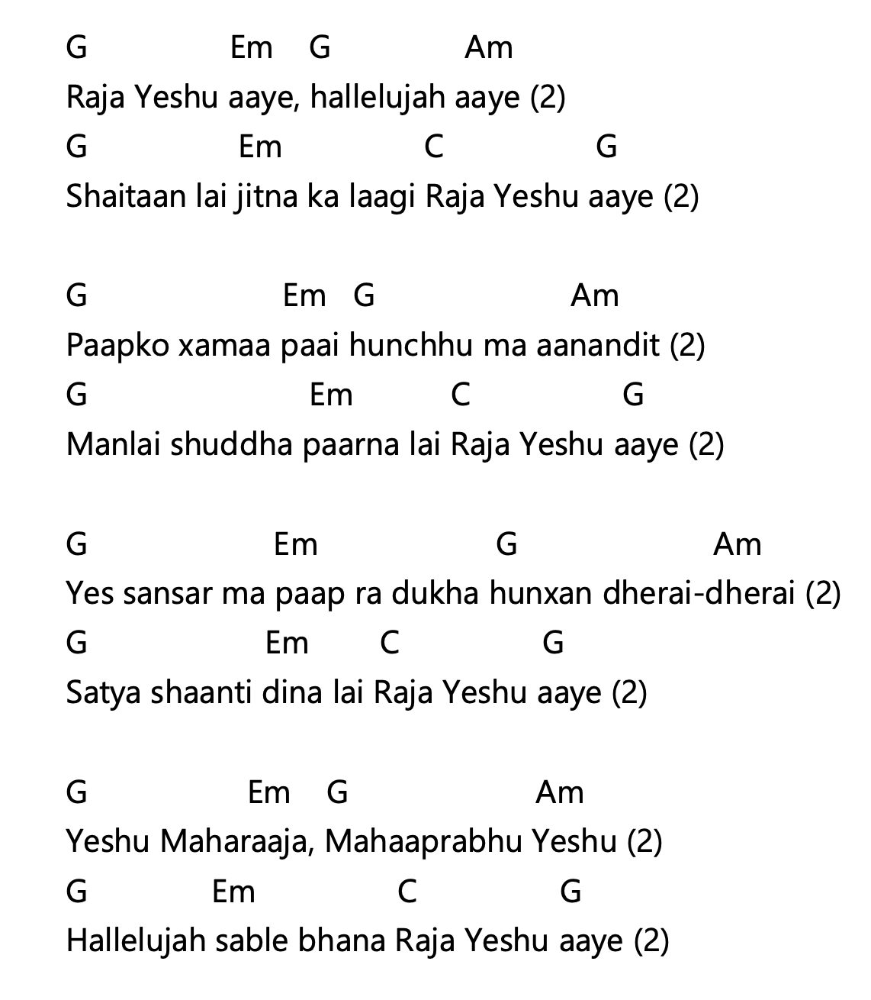
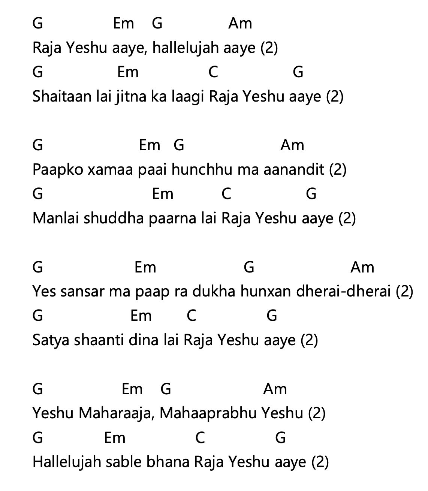

राजा येशू आए, हल्लेलूयाह आए (२) शैतानलाई जीत्नका लागि राजा येशू आए (२) पापको क्षमा पाई हुन्छु म आनन्दित (२) मनलाई शुद्ध पार्नलाई राजा येशू आए (२) यस संसारमा पाप र दुःख हुन्छन् धेरै-धेरै (२) सत्य शान्ति दिनलाई राजा येशू आए (२) येशू महाराजा, महाप्रभु येशू (२) हल्लेलूयाह सबले भन राजा येशू आए (२)